Ejercicio 5 -
Creación de cuentas Tomatocart usando Jmeter
En este ejercicio vamos a ver cómo podemos emplear las
variables
de usuario de Jmeter, y los controladores lógicos de un Test
Plan, para automatizar el proceso de creación de cuentas de
usuario en un servior Tomatocart durante un test Jmeter. Para ello,
proceder siguiendo estos pasos:
1) Para
empezar, queremos tener
un sistema Tomatocart totalmente limpio, por lo que lo devolveremos al
estado que tenía inmediatamente tras terminar el Ejercicio
1.
Para ello, apagar usando telinit
0 el servidor debiantomato, revertir
a la instantánea Tomatocart
final, y volver a arrancar el servidor.
2) En el
Windows 7 arrancar el navegador Firefox y acceder a http://10.0.0.21/tomatocart.
Pulsar sobre el enlace Create
Account.
Como vemos, la creación de cuentas tiene un "captcha",
justamente para impedir su abuso por robots. Para poder realizar el
test necesitaremos deshabilitarlo.
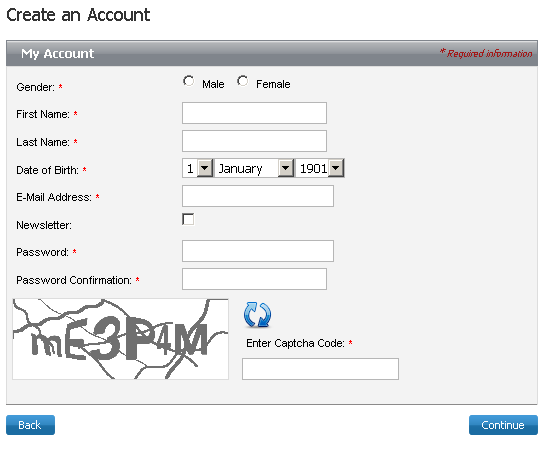
3) Abrir una nueva
pestaña en el Firefox y acceder a http://10.0.0.21/tomatocart/admin.
Hacer login como tomatoadmin,
con password deii15.
4) Cerrar el
Dashboard, y abrir el menú Start -> Configuration
-> Content Management System.
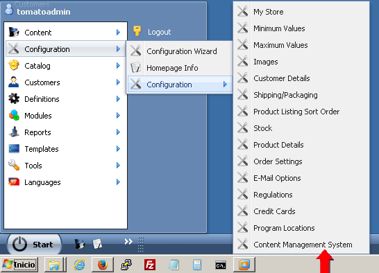
5) Cambiar a
False el
valor de Activate Captcha.
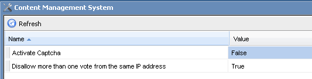
6) Cambiar a
la otra pestaña en Firefox y refrescar con F5 para comprobar
que el mecanismo de captcha se ha deshabilitado.
7) Volver a
la pestaña del administrador de Tomatocart y pulsar sobre el
ícono Customers.
Comprobaremos que todavía no hay ningún usuario
creado en Tomatocart.
Ahora vamos a usar Jmeter para capturar la transacción de
creación de un usuario. Como no queremos que, por accidente,
pueda mezclarse tráfico procedente del administrador de
Tomatocart (por ejemplo, muestreos periódcos de status del
servidor), vamos a cerrarlo.
8) Hacer
logout en la herramienta de Administración de Tomatocart, y
cerrar la pestaña.
9) Arrancar
Jmeter. Usando el procedimiento ya conocido, crear un template Recording, e iniciar
el proxy pulsando Start
en el Test Script
Recorder.
10)
Configurar el proxy en Firefox a localhost:8888.
11) Rellenar
el formulario de creación de cuenta de Tomatocart con los
valores mostrados en la figura, usando como password deii15prueba1.
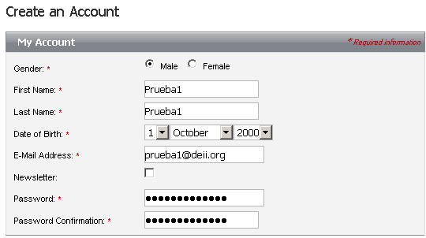
12)
Pulsar Continue.
La operación se demorará más de 10
segundos, tras lo cual aparecerá un mensaje de
confirmación de la creación de cuenta.
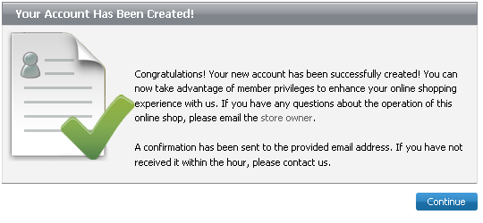
13) Detener
el proxy de Jmeter, y volver a configurar el proxy de Firefox a Autodetección.
En el View Results Tree
tendremos el tráfico HTTP generado por la
transacción de creación de cuenta que, como
observamos, involucra sólo al script account.php.
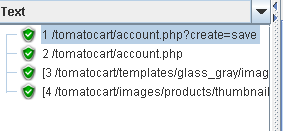
En particular, podemos ver que el formulario de creación de
cuenta envía al servidor una transacción HTTP
POST, cuyos datos son los valores introducidos por el usuario en el
formulario.
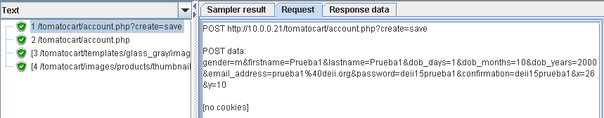
Podemos también observar que el código de
respuesta del servidor web al POST ha sido un 302, en el
típico esquema Post-Redirect-Get
para confirmar el resultado de la operación, y
cómo, efectivamente, la aplicación web busca la
confirmación de la operación haciendo un GET a account.php con el
parámetro create=success,
esperando obtener un 200
OK como resultado.
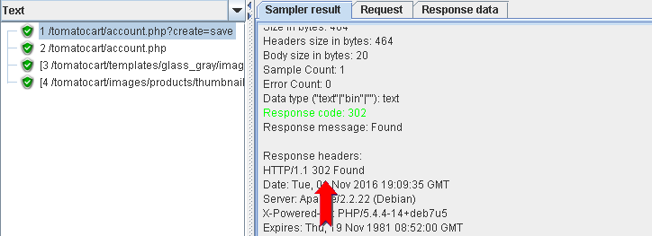
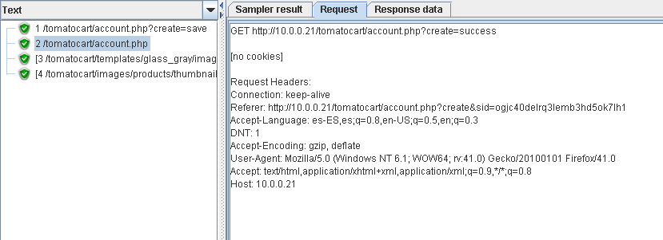
14)
Consultamos ahora, en el Recording
Controller, los dos HTTP Requests que ha
generado automáticamente Jmeter. De sus
parámetros podemos ver que corresponden, en efecto, a las
transacciones POST y GET que acabamos de comentar.
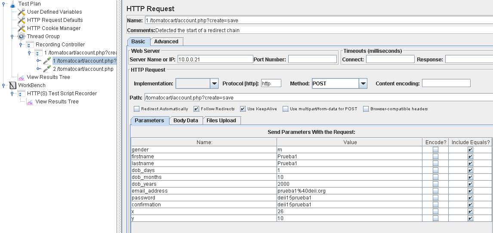
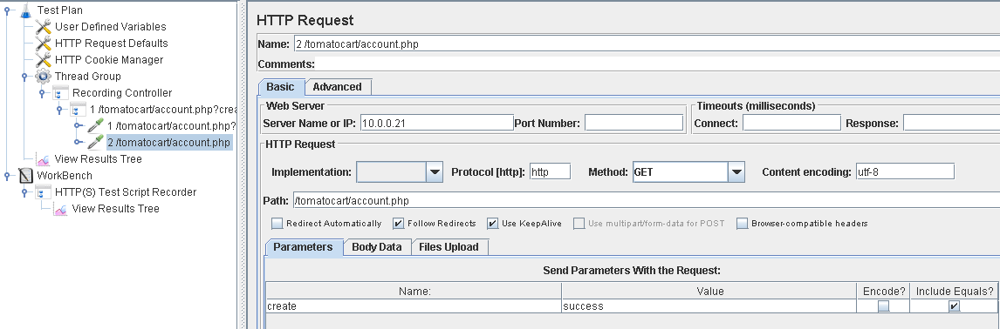
15) Salvar
el test al directorio D:\practicas\MV\apache-jmeter-3.0\bin\tests,
con el nombre record_crear_cuenta.jmx
16) En
Firefox, abrir en una segunda pestaña la herramienta de
administración de Tomatocart y comprobar, con la
aplicación Customers
que, en efecto, se ha creado la cuenta Prueba1.
Ahora, vamos a intentar crear una nueva cuenta, para el usuario Prueba2, usando un
test Jmeter.
17) Cerrar
el test en Jmeter, y abrir con File
-> Open el test record_crear_cuenta.jmx.
18)
Modificar los parámetros del HTTP Request POST
con los valores mostrados en la figura.
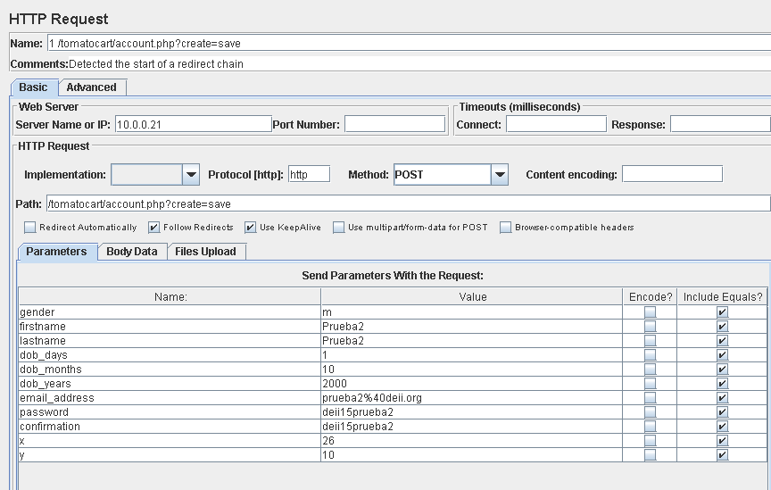
19) Ejecutar
el test, y comprobar el resultado en el View Results Tree.
Obtendremos el patrón de accesos mostrado en la figura.
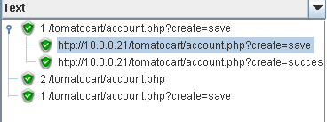
20)
Refrescando la herramienta de administración Customers
comprobamos que, en efecto, se ha creado la cuenta.
Sin embargo, el patrón de accesos del HTTP Request parece
indicar que la generación en el test del GET es redundante,
y que el GET es enviado automáticamente como respuesta al
POST. Para comprobarlo repetiremos el test, pero ahora evitando que se
genere el Request del GET.
21) En la
herramienta de administración de Customers, borrar la
cuenta Prueba2.
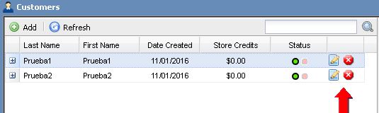
22) Con el
botón derecho, deshabilitar en el test Jmeter el HTTP Request del GET
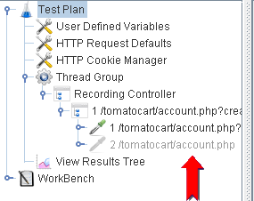
23) Con el
botón derecho, hacer Clear
sobre el View Results
Tree.
24) Volver a
ejecutar el test. Comprobar el resultado en el View Results Tree y
en la herramienta de gestión de Customers de
Tomatocart.
Como se observa, la cuenta Prueba2
ha vuelto a crearse correctamente, pero ahora el patrón de
accesos HTTP sí se corresponde con lo esperado, confirmando
que era innecesario generar explícitamente el HTTP Request
con el GET.
Una vez que tenemos confirmada la forma correcta de generar una cuenta,
vamos a modificar el test para automatizar el proceso y crear las
cuentas Prueba3
a Prueba5,
usando un bucle que dé valores a una variable de usuario de
Jmeter.
25) Primero,
borramos del test el HTTP
Request del GET,
que ya sabemos es innecesario.
26) Ahora,
seleccionarmos el Transaction
Controller que contiene el acceso a account.php y, con
el botón derecho, le añadimos un Logic Controller -> Loop
Controller. Darle los valores mostrados en la figura.
Arrastrarlo con el ratón en el GUI hasta situarlo por encima
del HTTP Request.
27) Con el Loop Controller bucle
seleccionado, añadirle un Config Element -> Counter.
Darle los valores mostrados en la figura.
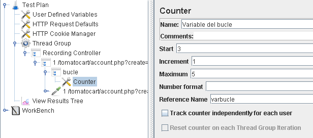
28)
Arrastrar el HTTP Request para que, en el árbol del test,
pase a ser jerárquicamente dependiente del Loop Controller,
y modificar los valores de los parámetros del POST de acuerdo a lo
mostrado en la figura.
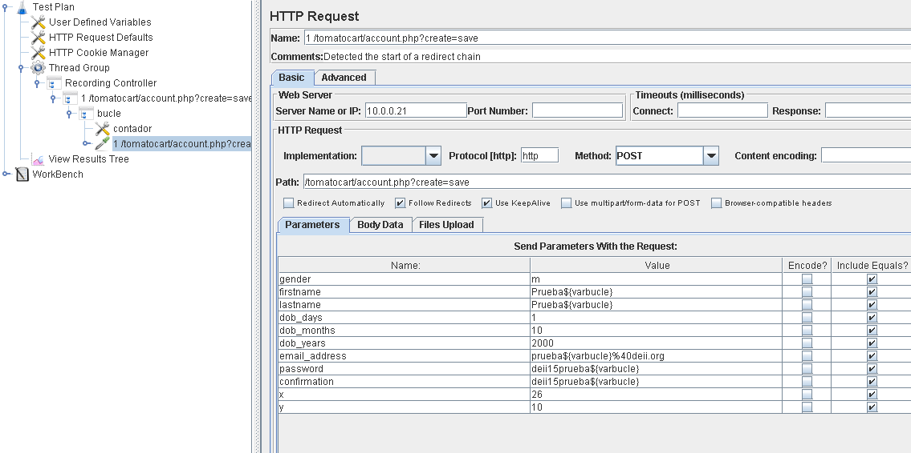
29)
Seleccionar el View
Results Tree, y hacerle Clear.
30) Ejecutar
el test. Comprobar el resultado en el View Results Tree y
en el administrador de Customers.
Tal como deseábamos, vemos que las cuentas de los usuarios
3, 4 y 5 han sido creadas con éxito.
31) Salvar
el test con el nombre bucle_creacion_cuentas.jmx
Finalmente, vamos a ver cómo usar uno de los diversos
controladore que Jmeter ofrece para manejar variables de usuario.
Concretamente, vamos a emplear un pre-procesador User Parameters para, combinado con la ejecución de múltiples threads (usuarios), generar tres juegos de tres cuentas distintos.
32) Hacer Clear del View Results Tree.
33) Seleccionar el Loop Controller bucle y añadirle un Pre-Processor -> User Parameters. Darle los valores mostrados en la figura.
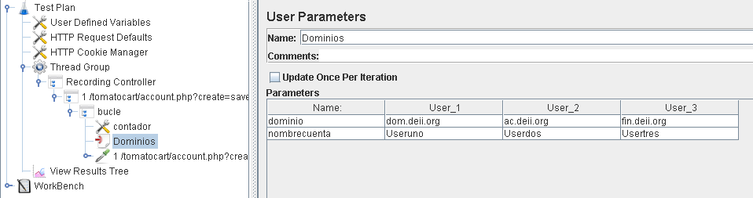
34) En la herramienta de administración de Customers, borrar las cuentas Prueba3, Prueba4 y Prueba5 que hemos generado anteriormente.
35) Modificar el HTTP Request tal como se indica en la figura.
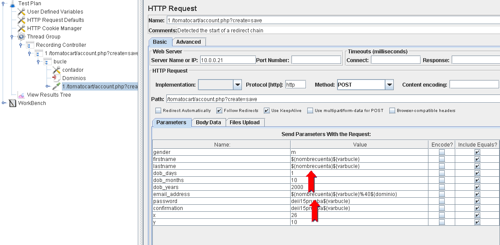
36) Modificar el Thread Group para crear tres threads (usuarios), como se muestra en la figura.
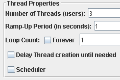
37) Modificar el Counter que gestiona la variable de bucle contador como muestra la figura, para que cada usuario tenga su propio contador, variando entre 3 y 5.
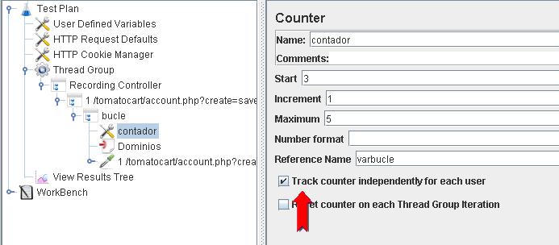
38) Ejecutar el test, y comprobar el resultado en el View Results Tree y en el administrador de Customers; tal como se esperaba, tenemos nueve usuarios distintos, cuyos nombres combinan los nombres de cuenta introducidos como User Parameter con los valores de la variable de bucle, y cuyos dominios de correo cambian también según el nombre de usuario.
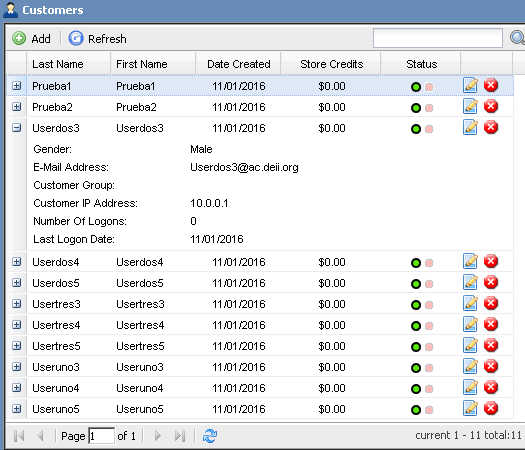
39) Hacer Clear al View Results Tree, y guardar el test resultante como cuentas_doble_bucle.jmx
40) Para terminar el Ejercicio, apagar (con telinit 0) el servidor debiantomato y hacer Go To a la instantánea Tomatocart final, dejándolo así preparado para los ejercicios sin guión que se especifiquen en el Campus Virtual.